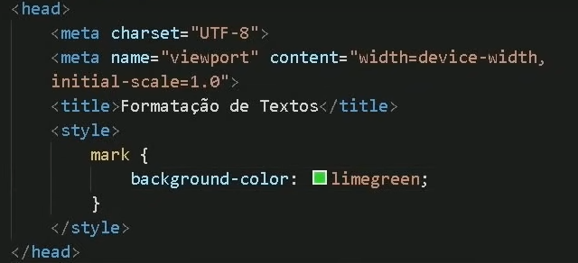

Nesta frase, temos um termo em negrito usando a tag B (não semântica).
Nesta frase, tenho um termo em destaque usando a tag STRONG (semântica).
Nesta frase, temos um termo em Itálico usando a tag I (não semântica).
Nesta frase temos um termo em ensfase usando a tag EM (semântica).
Podemos criar também um texto marcado com a tag MARK.
E em outro páragrafo mesmo também tendo o texto marcado ele não erda a cor do de cima porque a CSS foi usada dentro daquela tag. Para erdar teria que fazer algo assim. 
Estamos criando um texto grande e um texto pequeno nesse parágrafo.
Podemos marcar um texto como excluido para indicar que ele dever ser lido, mas não considerado.
Podemos marcar um texto como inserido para dar uma ênfase e indicar que ele foi adicionado depois.
Existe também o sublinhado que é com a tag U (não semântica).
Para inserir coisas tipo x20+3
Para inserir coisas como H2o